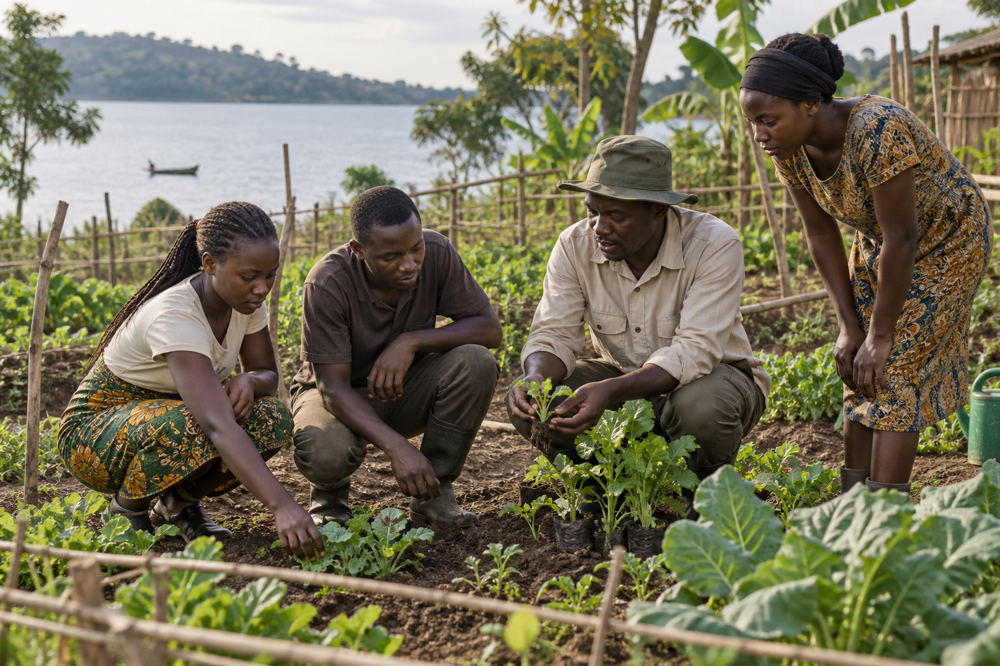

Education · placeholder
Project title pending
Add verified status, activities and outcomes.
View template →Projects & impact
This page provides placeholders for verified current and proposed projects. It does not claim results, beneficiaries, donors, grants or financial figures.
Education · placeholder
Add verified status, activities and outcomes.
View template →Skills · placeholder
Add approved programme details.
Livelihoods · placeholder
Add verified enterprise work.
Agriculture · proposed
Add confirmed plans and partners.
Fisheries · proposed
Add confirmed plans and location.
Health & WASH · proposed
Add approved scope and safeguards.


Impact placeholders
Future reporting can include approved counts of participants, activities and facilities alongside methods and reporting periods.
Publish only with informed consent and appropriate privacy protection.
Downloadable reports will appear here after approval. No report is currently available.